Real-world deployment of containerized Node.js application on AWS ECS Fargate with automated CI/CD, infrastructure as code, and production-ready security practices.
Fully automated deployment pipeline that builds, tests, and deploys the application with environment-specific configuration and secrets management.
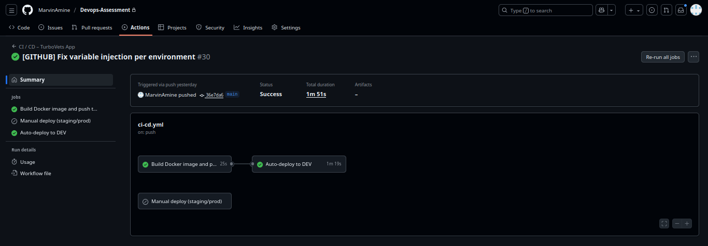
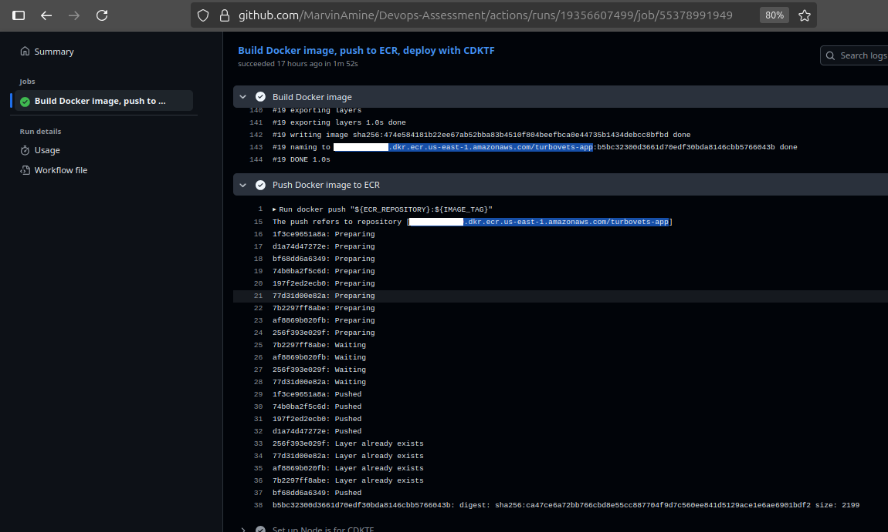
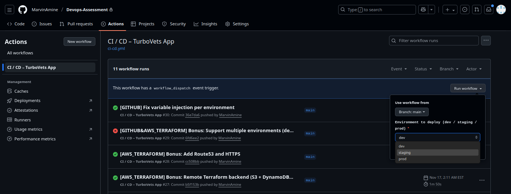
RepositoryNotEmptyException that would occur if Terraform tried to destroy
a non-empty ECR repository.
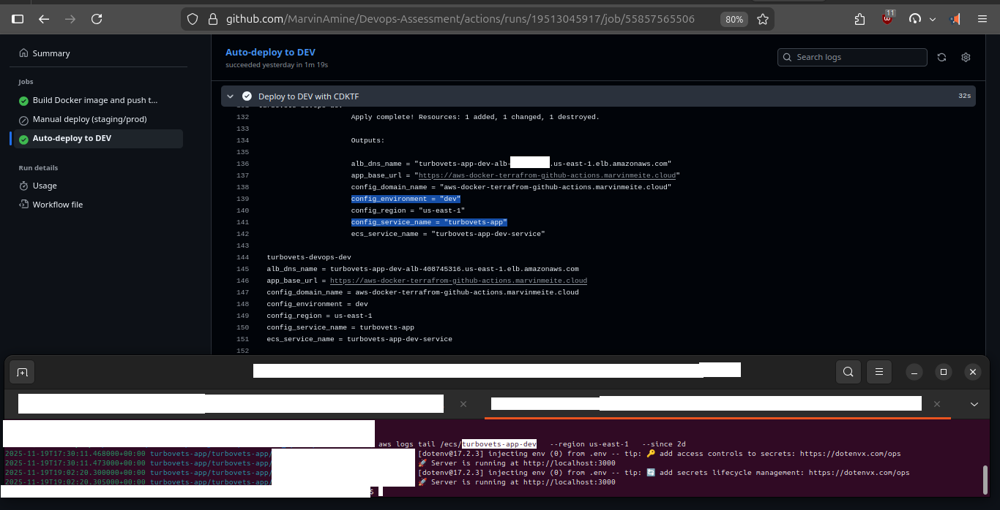
terraform.tfstate files per environmentcdktf deploy runs from corrupting the stateTF_STATE_BUCKET, TF_LOCK_TABLE)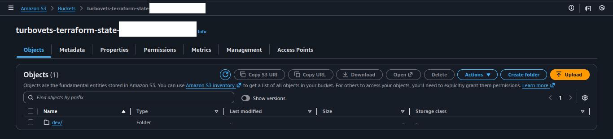
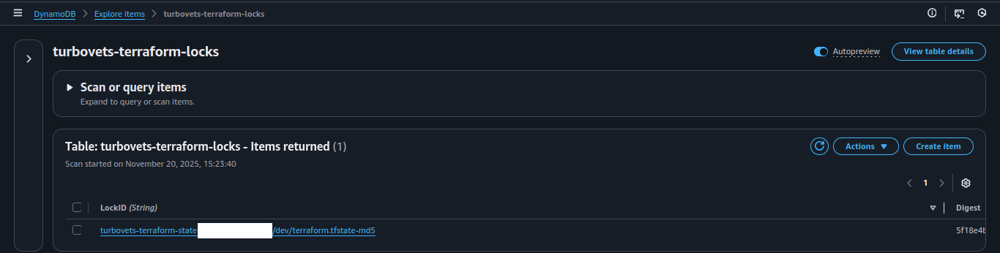
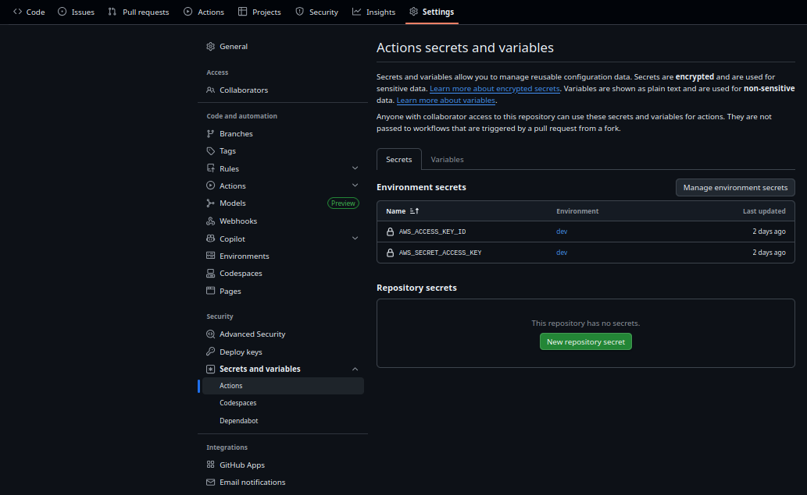
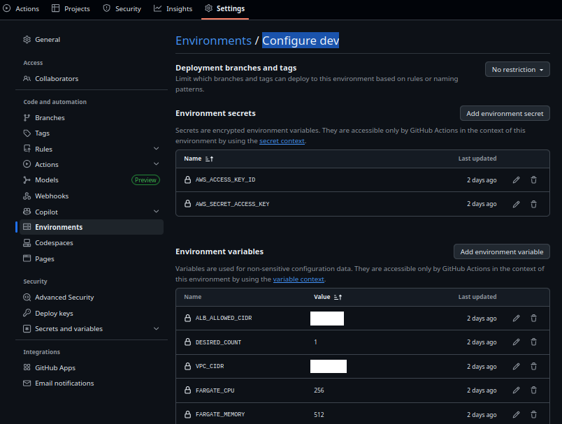
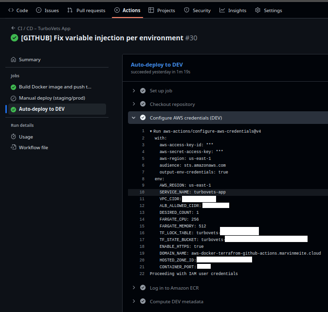
Complete variable injection during deployment showing all environment-specific configuration
Least-privilege IAM setup with dedicated CI/CD user, grouped permissions, and role-based access control for ECS tasks.
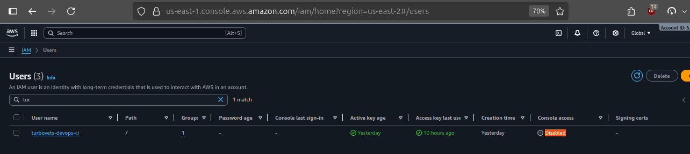
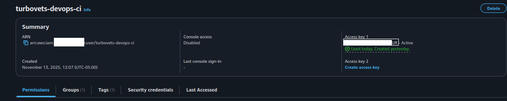
turbovets-github-actions-group
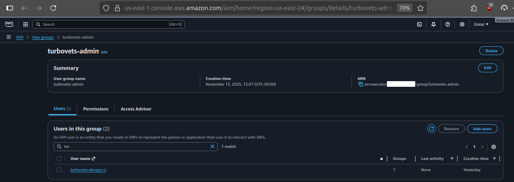
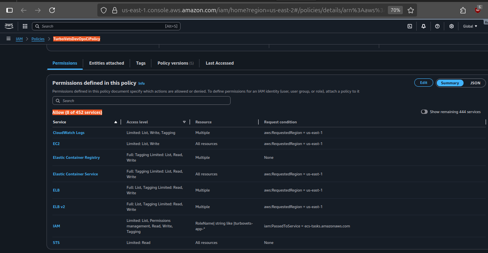
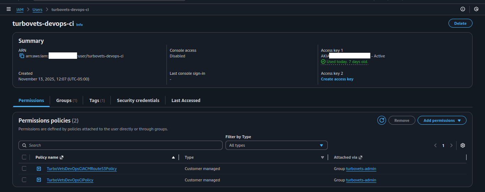
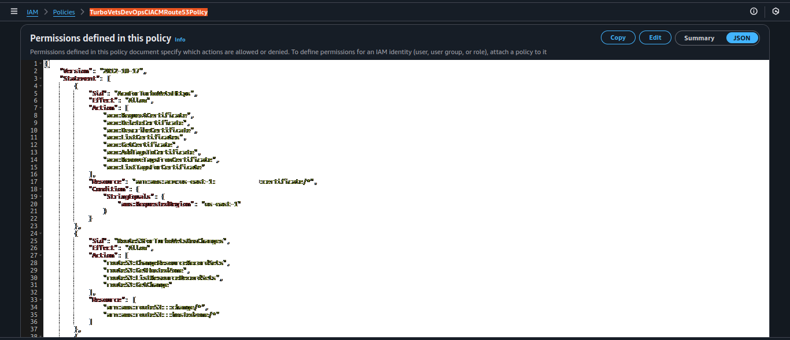
Full permission breakdown showing inherited group policies and dedicated Route53/ACM policy.
Multi-AZ VPC with ECS Fargate cluster, Application Load Balancer, and production-ready networking configuration deployed via CDKTF.
turbovets-app-dev-cluster with running service
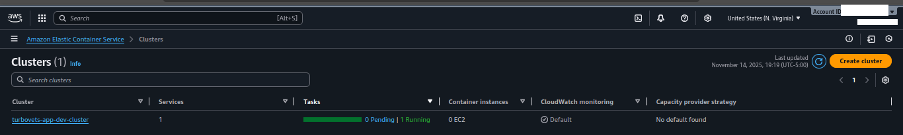
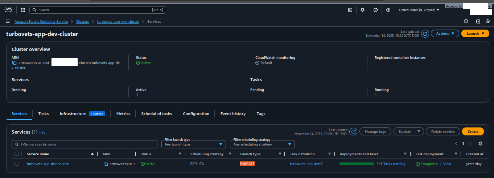
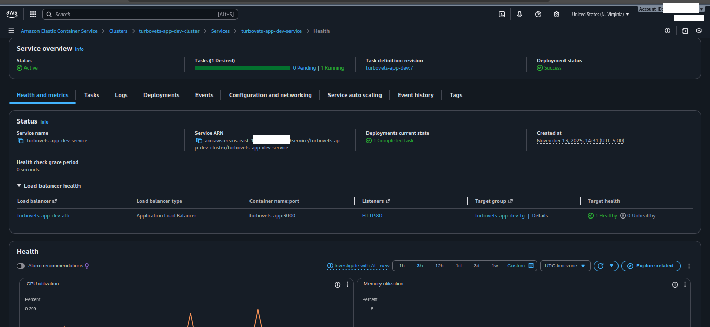
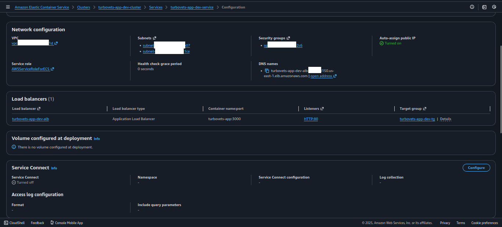